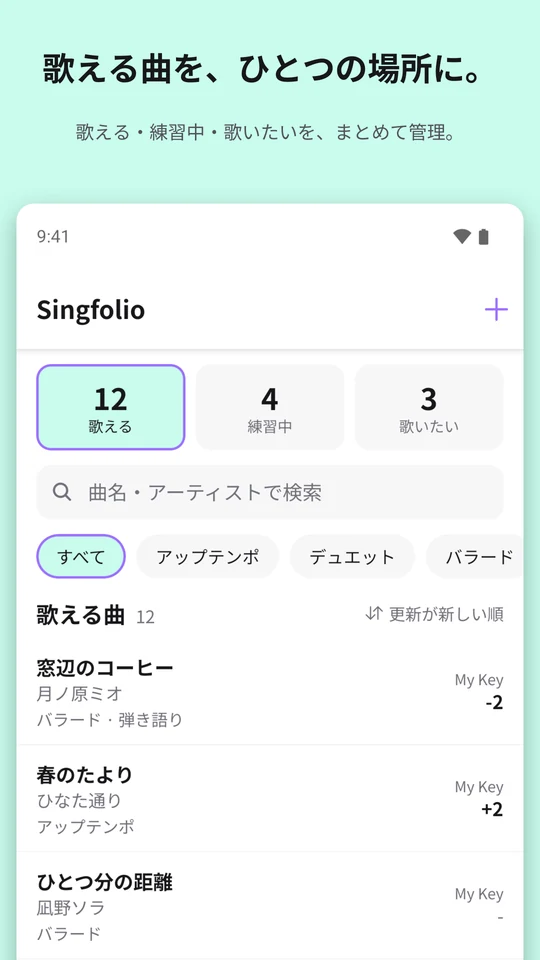
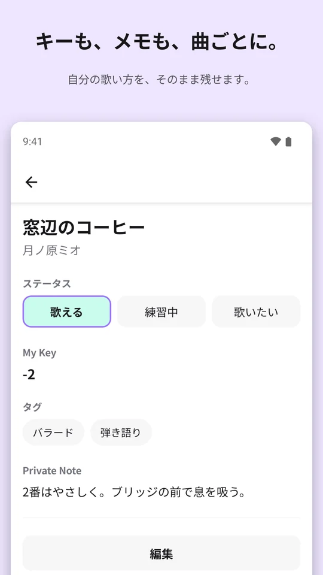
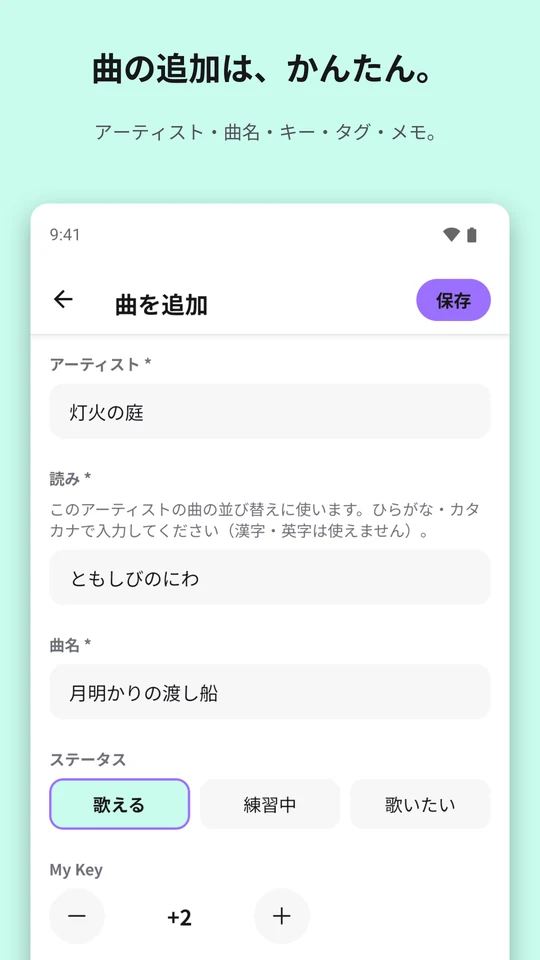
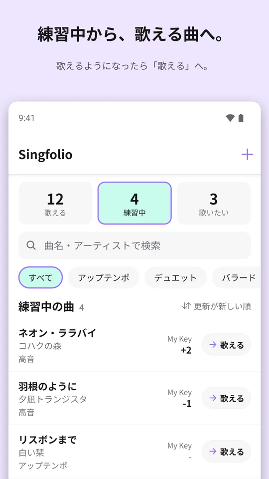
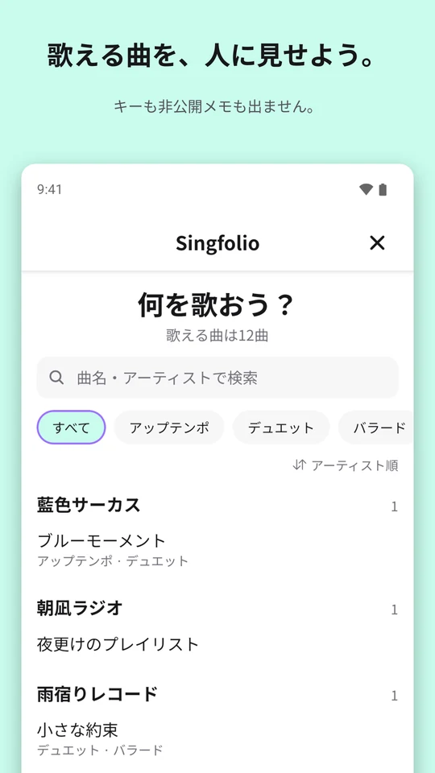
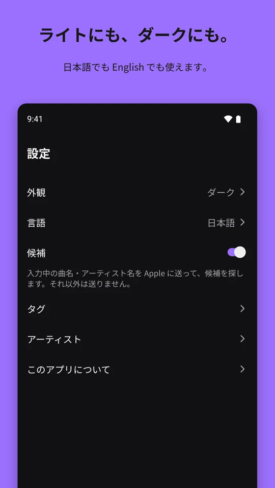

歌う人に必要なものを
- 曲名とアーティストで曲を追加。入力中に候補が出ます（オフにもできます）
- 曲ごとに、自分のキーをメモ。一覧でもひと目で確認
- 「バラード」「デュエット」などのタグを付けて、絞り込み
- 自分だけが見られる非公開メモ
- 曲名・アーティストで検索、好きな順に並び替え
- 「練習中」で絞り込んで、練習中の曲を一覧。歌えるようになったら、ワンタップで「歌える」へ
歌える曲を、ひとつの場所に。
Singfolioは、歌う人のためのレパートリー管理アプリです。カラオケ、弾き語り、歌配信、ライブで。管理するのは歌の点数ではなく、自分が何を歌えるか。
iOS版は準備中です。






スマートフォンを友だちに見せて、歌える曲を伝えられます。Show Modeは「歌える」曲をアーティストごとに並べ、検索とタグの絞り込みができます。キーも非公開メモも出ず、編集もできません。
ライトモード・ダークモードに対応。日本語・英語で使えます。
点数も、ランキングもありません。歌えるものだけを。